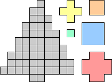

Holiday Puzzles 2010
| 1. DECORATING THE TREE
| |
| |
Decorate the tree below with the 5 different sizes of ornaments shown. The ornaments should cover the entire tree and not overlap. You should use only 17 ornaments, including at least one of every size, and no yellow ornament should touch a blue ornament.
|  | |  | |
|
| 2. DELIVERY ROUTE | |
Help Santa deliver holiday presents in this subdivision, where half the kids have been naughty. He needs to enter on the left, pass through 2 houses of each color (that's where the nice kids live!), and exit on the right, without crossing his path or retracing his steps.
 | | | |
|
| 3. WINTER WORDS | |
Find 2 words related to the holiday season.
Then find 2 more holiday words using the exact same letters rearranged.
Something seen in windows: _ _ _ _ _ _ _ + Common holiday color: _ _ _
Common winter toy: _ _ _ _ + One of Santa's Reindeer: _ _ _ _ _ _ | |
|
| 4. NUMBER MENORAH
Place the digits 1-9 on the candles of the menorah below, so that each 2-digit substring of the numbers in the bottom row is divisible either by 8 or 9.
 | | | |
|
| 5. SANTA'S ELVES | | | |
Santa has 3 elves who are collectively in charge of 5 workshops scattered around the North Pole. One of these elves sometimes lies, but Santa does not know which one. One of the 5 workshops has lost power, and Santa does not know which one, so he plans to send the elves to check on the workshops and report back to him. He could determine which workshop has lost power in 4 trips maximum: send all the elves in turn to workshops #1, #2, #3, and #4. Even if the lying elf lies, the majority vote will tell Santa what he needs to know. How can Santa save time and determine which workshop has lost power only using 3 trips? |
|
Go back to Erich's Holiday Puzzles.